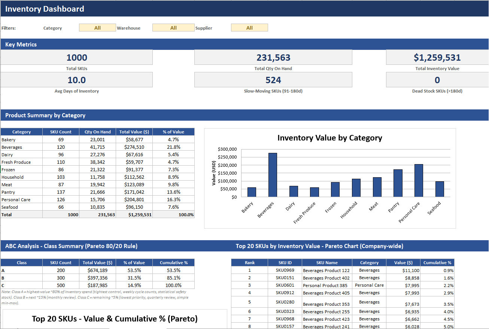
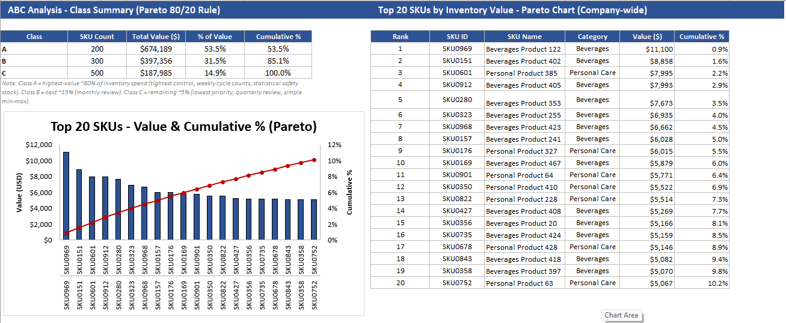
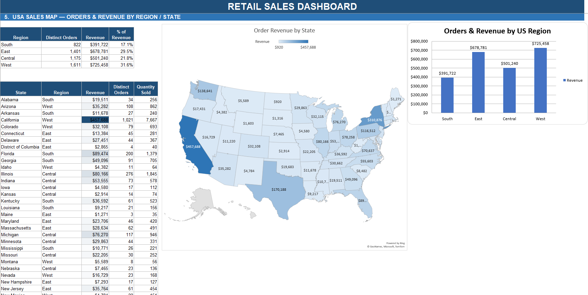
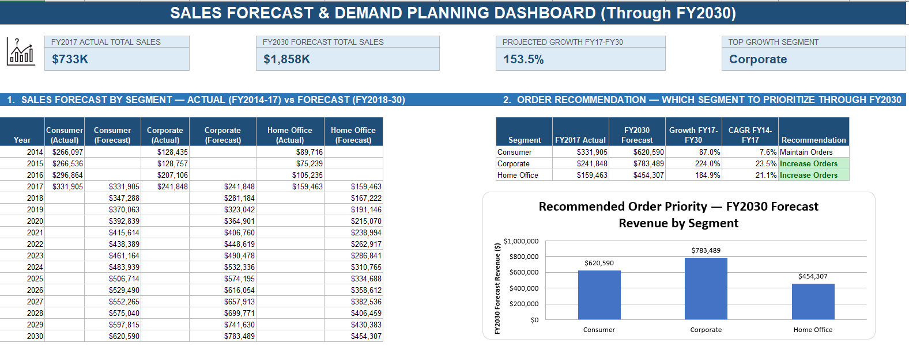
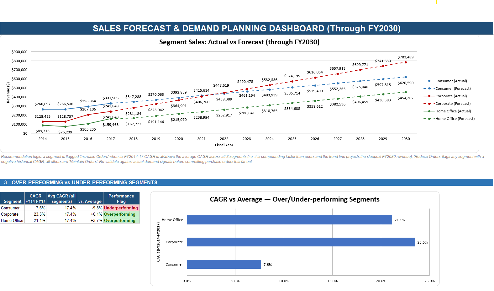
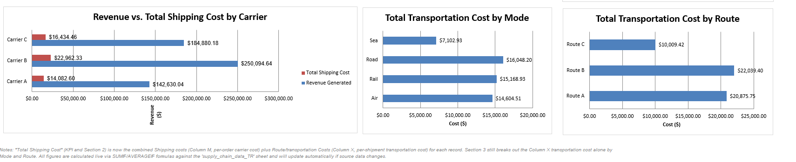

Projects
Excel-based analytics dashboards built for inventory, retail sales/forecasting, and transportation cost analysis.
Inventory Management Dashboard
An Excel-based inventory analytics workbook for an e-grocery operation, covering 1,000
SKUs across 10 categories. Combines an Order Management view (reorder prioritization)
with an Inventory Dashboard view (stock health and ABC/Pareto analysis) — built entirely
on live SUMIF/AVERAGEIF-style formulas against a raw SKU-level dataset, no pivot tables.
1,000 SKUs tracked$1.26M total inventory value
261 SKUs needing reorder84.7% avg. supplier on-time
10.0 avg. days of inventory524 slow-moving SKUs



What to notice: the reorder logic is fully rules-based — Suggested Qty =
MAX(Forecast_Next_30d − Qty On Hand + Safety Stock, 0), ranked by shortfall against
each SKU's reorder point. The ABC analysis follows the classic 80/20 rule: Class A SKUs
(53.5% of value from just 200 SKUs) get the tightest control, while Class C gets simple
min-max review.
Retail Sales & Forecast Dashboard
A two-part retail analytics workbook: a historical sales performance dashboard and a
forward-looking demand-forecast dashboard projecting revenue by customer segment through
FY2030, with a CAGR-based recommendation engine flagging which segments to prioritize.
$2.30M total revenue5,009 orders37,873 units sold
$458.61 avg. order valueFY2030 forecast: $1.86M (+153.5%)
Top growth segment: Corporate




What to notice: the recommendation logic compares each segment's FY2014–17 CAGR
against the average across all three segments. Corporate (23.5% CAGR) and Home Office
(21.1%) are both flagged "Increase Orders" for compounding faster than peers, while
Consumer (7.6% CAGR) is held at "Maintain Orders" despite generating the most revenue
today — a case for looking at growth rate, not just current volume.
Transportation Analysis Dashboard
An e-commerce shipping and revenue dashboard analyzing product performance, carrier
efficiency, and transportation cost by mode and route — built on live formulas against a
raw shipment-level dataset, with a documented calculation methodology for total shipping
cost.
$577.6K total revenue46,099 units sold
$53.5K shipping cost (9.3% of revenue)$52.9K transport cost
5.8 days avg. shipping time


What to notice: Skincare drives 42% of revenue share despite being one of three
product lines, and Carrier B — while moving the most volume — also runs the highest
per-order shipping cost ($534.01), a candidate for renegotiation or route rebalancing
toward Carrier C.